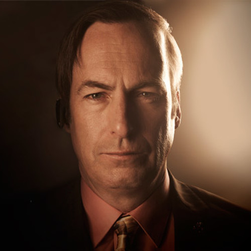

Walter "Heisenberg" White
Walter Hartwell White Sr. is a fictional character from the TV series Breaking Bad. After he got cancer, he got into the drug manufacturing and distribution business with Jesse Pinkman, a former high school student, in an effort to leave money for his family. He does this in secret from his brother-in-law, Hank Schrader, who is a narcotic agent.
Last updated 3 mins ago

Jessie Pinkman
Jesse Bruce Pinkman is a fictional character played by Aaron Paul in the TV series Breaking Bad and the movie El Camino: A Breaking Bad Movie. Crystal meth manufacturer and seller. She is the partner of Walter White, a former high school chemistry teacher, and they make drugs together.
Last updated 3 mins ago

Skyler White
Skyler White is a fictional character from the TV series Breaking Bad. Walter White's wife is Ted Beneke's ex-mistress. Skyler White, a former accountant, was involved in money laundering for a while. He is played by Anna Gunn.
Last updated 3 mins ago

Saul Goodman
Saul Goodman, formerly James Morgan McGill, is a fictional character from the TV series Breaking Bad and Better Call Saul. He is played by Bob Odenkirk. The character is a lawyer engaged in illegal business. In addition to being a lawyer, he also works to help his clients.
Last updated 3 mins ago